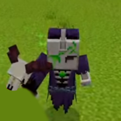

Некроман — один из главных антагонистов второго сезона "Магический Мир". Несмотря на то, что многие ошибочно называют его "Некромантом", его истинное имя — Некроман. Он является могущественным существом, обладающим способностями призывать нежить и управлять силами тьмы. Его присутствие в сериале символизирует угрозу, с которой Данил уже столкнулся.
Битва▼
Некроман впервые появляется во второй серии, когда Данил оказывается перед троном, на котором это существо возвышается в воздухе. В их битве Некроман оказывается грозным противником: он призывает скелетов и зомби, а также наносит мощные удары. Для Данила эта схватка становится настоящим испытанием, ведь Некроман управляет монстрами с необычайной лёгкостью, показывая свою силу и доминирование.
Артефакты▼
Некроман не просто сильный враг, он также владеет уникальными артефактами, такими как его посох, который обладает магическими свойствами. После его поражения Данил завладевает этими предметами, что даёт ему новое преимущество в его приключениях. Посох Некромана может призывать нежить, а маска, связанная с этим персонажем, имеет особенные свойства, которые до конца не раскрыты.
Итог ▼
Некроман — мощный антагонист в мире Данила, который вызывает страх и уважение. Его появление и способности добавляют сюжетной напряжённости, а борьба с ним становится одним из ключевых моментов второго сезона. Хотя его имя часто путают с "Некромантом", именно Некроман оставляет след в истории как один из самых запоминающихся противников Данила.